인터넷정보관리사-2급 (2019-09-21 기출문제)
1과목: 인터넷의 이해
1. 다음 중 인터넷에 대한 설명으로 잘못된 것은?
- 인터넷 기술 중 DNS는 1984년에 그 개념이 도입되었다.
- 우리나라 인터넷의 시초는 1,200bps 전용선으로 연결하여 구축하였다.
- WWW에 대한 기술 표준은 W3(W3C)가 모든 것을 담당한다.
- KRNIC는 한국인터넷정보센터로 인터넷 주소 자원을 관리한다.
(정답률: 56%)

2. 다음 중 ICANN의 산하 기구와 담당 업무에 대한 설명으로 잘못된 것은?
- GNSO : 일반 최상위 도메인의 신규 생성
- ccNSO : 국가 최상위 도메인 관련 정책 개발
- ASO : IP 주소 지원 그룹
- GAC : 도메인 운영 자문 역할
(정답률: 44%)
3. 인터넷의 효시인 ARPANET을 만든 초기 목적은 무엇인가?
- 군용
- 금융
- 행정
- 정치
(정답률: 85%)
4. 도메인 네임 선정 원칙에 대한 설명으로 잘못된 것은?
- 영문자 대소문자를 구분하여 사용한다.
- 영어나 숫자로 시작해야 한다.
- 최대 63자까지 가능하다.
- 언더바(_) 등의 특수 기호는 사용할 수 없다.
(정답률: 65%)
5. 다음 중 IPv6의 주소로 할당되는 유형의 종류가 아닌 것은?
- 멀티캐스트 주소
- 애니캐스트 주소
- 브로드캐스트 주소
- 유니캐스트 주소
(정답률: 76%)
6. 다음 중 IPv4의 B클래스에서 사용하는 기본 넷마스크에 해당되는 것은?
- 255.0.0.0
- 255.255.0.0
- 255.255.255.0
- 255.255.255.255
(정답률: 71%)
7. 전자우편 프로토콜 중 993번 포트를 사용하고, 사용자가 메일 서버에서 메일을 읽을 수 있도록 고안된 수신 담당 표준 프로토콜은 무엇인가?
- SMTP
- POP3
- IMAP
- MIME
(정답률: 57%)
8. 전자우편에서 수신자의 전자우편 주소가 잘못된 경우 나타나는 에러 메시지는 무엇인가?
- User Unknown
- Host Unknown
- Sender Blocked
- Local Configuration Error
(정답률: 65%)
9. 다음에서 설명하는 전자상거래 용어는 무엇인가?
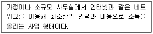
- EDI
- Cyber Business
- SOHO
- CRM
(정답률: 65%)
10. 다음에서 설명하는 소셜 네트워크의 개념은 무엇인가?
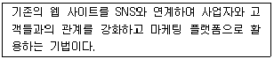
- 오픈 그래프(Open Graph)
- 개방형 플랫폼
- 소셜 커머스(Social Commerce)
- 웹 2.0
(정답률: 49%)
11. 다음 중 메신저의 특징에 대한 설명으로 잘못된 것은?
- 실시간 응답성
- 시간과 공간의 제한성
- 익명성
- 다양한 미디어 전송 가능
(정답률: 75%)
12. 다음에서 설명하는 요소 기술을 이용하는 클라우드 컴퓨팅 솔루션은 무엇인가?
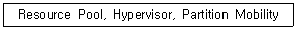
- 오픈 인터페이스
- 가상화 기술
- 서비스 프로비저닝
- 자원 유틸리티
(정답률: 50%)
13. 다음은 하둡(Hadoop)에 대한 설명이다. 괄호 안에 알맞은 용어는 무엇인가?
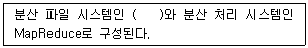
- FAT32
- NTFS
- FAT
- HDFS
(정답률: 49%)
14. 클라우드 서비스 유형 중 이용자가 원하는 S/W를 임대·제공하는 서비스는 무엇인가?
- IaaS
- PaaS
- SaaS
- NaaS
(정답률: 58%)
15. 증강 현실에 대한 설명으로 잘못된 것은?
- 실세계에 3차원 가상 물체를 겹쳐서 보여주는 기술이다.
- 특정 환경을 컴퓨터로 만들어서 사용자가 실제 환경에 있는 것처럼 만들어 준다.
- 현실과 가상 세계를 합쳐 하나의 영상으로 보여주므로 MR이라고도 한다.
- 현실 환경과 가상 화면과의 구분이 모호해지도록 한다는 뜻이다.
(정답률: 43%)
16. 스마트 TV, PC, 스마트폰 등의 다양한 기기에서 같은 정보를 이용할 수 있게 하는 네트워크 서비스를 무엇이라 하는가?
- N Screen
- SNS
- Widget
- Smart Grid
(정답률: 46%)
17. 다음 괄호 안에 알맞은 용어는 무엇인가?
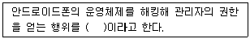
- 부팅(Booting)
- 루팅(Rooting)
- 리부팅(Rebooting)
- 해킹(Hacking)
(정답률: 69%)
18. 개인 정보 수집·이용시 개인 정보 처리자가 제공해야 하는 항목에 대한 설명이 아닌 것은?
- 개인 정보의 수집·이용 목적
- 수집하는 개인 정보 처리자의 정보
- 개인 정보의 보유 및 이용 기간
- 동의 거부 권리 및 거부에 따른 불이익의 내용
(정답률: 60%)
19. 개인 정보 유형과 종류에 대한 연결이 잘못된 것은?
- 통신 정보 : 전화 통화 내용, 로그 파일
- 신체 정보 : 지문, 홍채
- 의료 정보 : 혈액형, 흡연
- 신용 정보 : 저당, 신용카드, 대부잔액
(정답률: 65%)
20. 다음 중 저작권 보호법에서 보호받지 못하는 저작물을 모두 선택한 것은?
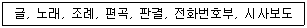
- 편곡, 판결, 시사보도
- 조례, 판결, 시사보도
- 전화번호부, 조례, 글
- 전화번호부, 편곡, 판결
(정답률: 68%)
21. 저작권 보호 방법에서 존속 기간은 저작자 사후 몇 년까지 인정되는가?
- 50년
- 60년
- 70년
- 무기한
(정답률: 61%)
22. 개인정보보호법에서 노조 가입, 종교 단체 가입, 정당 가입 등의 개인 정보 유형은 무엇인가?
- 조직 정보
- 고용 정보
- 일반 정보
- 법적 정보
(정답률: 68%)
23. 저작물 등의 원본 또는 그 복제물을 공중에게 대가를 받거나 받지 아니하고 양도 또는 대여하는 것을 무엇이라 하는가?
- 복제
- 배포
- 공표
- 발행
(정답률: 63%)
24. 다음은 EPROM에 대한 설명이다. 괄호 안에 알맞은 용어는 무엇인가?
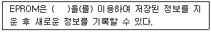
- 레이저
- 자외선
- 적외선
- 초음파
(정답률: 47%)
25. 컴퓨터 프로그램의 일부를 빠르게 고치기 위해 개발사가 추가로 내놓은 수정용 소프트웨어로, 프로그램의 일부를 바르게 고치는 일을 무엇이라 하는가?
- 패치(Patch)
- 번들(Bundle)
- 프리웨어(Freeware)
- 알파 버전(Alpha version)
(정답률: 65%)
26. 다음은 xDSL에 대한 설명이다. 괄호 안에 알맞은 용어는 무엇인가?
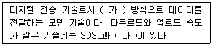
- 가 : 전이중 나 : HDSL
- 가 : 반이중 나 : HDSL
- 가 : 전이중 나 : ADSL
- 가 : 반이중 나 : ADSL
(정답률: 42%)
27. 다음 중 ISDN의 채널 종류에 대한 설명으로 잘못된 것은?
- B채널 : 데이터의 전송은 B채널에서만 이루어 진다.
- D채널 : 회선 교환 방식을 위한 제어 신호 전송용 채널이다.
- H채널 : 대용량의 가입자 정보 전송용 채널이다.
- I채널 : 고속 팩스, 비디오 서비스 제공 채널이다.
(정답률: 39%)
28. 인터넷에서 송신 패킷에 담긴 수신처의 주소를 읽고 경로 배정을 하는 전송 장치는 무엇인가?
- 라우터
- 리피터
- 브리지
- 게이트웨이
(정답률: 53%)
29. 다음 중 웹에 관련된 설명으로 잘못된 것은?
- 프록시 서버는 클라이언트가 아닌 서버의 역할만을 수행한다.
- 웹의 에러코드는 클라이언트측 에러코드와 서버측 에러코드로 구분된다.
- VoIP는 인터넷을 통해 실시간으로 음성 통화를 가능하게 하는 기술이다.
- Ajax 기술을 이용하면 응용 프로그램의 응답성이 좋아진다.
(정답률: 50%)
30. 웹 브라우저를 통해 3차원 가상현실을 구현하기 위해 사용하는 그래픽 데이터 기술 언어는 무엇인가?
- HTML
- XML
- VRML
- Active X
(정답률: 66%)
31. 웹 페이지에서 다른 미디어 사이를 연결하는 것을 무엇이라 하는가?
- HTTP
- URL
- 하이퍼링크(Hyperlink)
- 프로토콜(Protocol)
(정답률: 62%)
32. 다음 중 비디오 파일의 형식을 모두 선택한 것은 무엇인가?
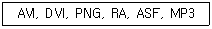
- AVI, DVI, ASF
- AVI, RA, ASF
- DVI, PNG, RA
- PNG, RA, MP3
(정답률: 65%)
33. 다음에서 설명하는 멀티미디어 용어는 무엇인가?
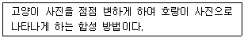
- 인터레이싱(Interlacing)
- 오버프린트(Overprint)
- 모핑(Morphing)
- 클립아트(Clip Art)
(정답률: 54%)
2과목: 인터넷 자원 탐색
34. 웹 브라우저에서 권한이 없는 접근 금지된 자원을 요구할 때 나타나는 웹 서버 관련 에러코드는?
- 403
- 404
- 500
- 503
(정답률: 44%)
35. 인터넷상에서 컴퓨터 사이의 파일을 전달하는 데 사용되는 프로토콜은?
- FTP
- TCP
- SMTP
- TELNET
(정답률: 47%)
36. 웹 브라우저의 역할에 대한 설명으로 잘못된 것은?
- 주소 표시줄에 URL 형식을 입력하여 데이터를 요청한다.
- 동시에 여러 개의 웹 브라우저를 사용할 수 있다.
- 윈도우, 리눅스의 운영체제만 지원하고 있다.
- 하이퍼미디어 정보를 불러올 수 있다.
(정답률: 63%)
37. 다음에서 설명하는 웹 브라우저는?
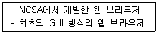
- HotJava
- Arachne
- Mosaic
- Opera
(정답률: 54%)
38. 다음 중 모질라 재단에서 개발한 오픈소스 기반의 웹 브라우저는?
- Safari
- Firefox
- Chrome
- Internet Explorer
(정답률: 58%)
39. 다음 중 스피드 모드, 마우스 액션, 스마트 주소창, 예약 웹서핑 등의 다양한 기능을 제공하는, 국내에서 개발한 웹 브라우저는?
- Samba
- Swing
- Opera
- Netscape
(정답률: 46%)
40. W3C의 리소스 우선순위 표준을 지원하는 최초의 웹 브라우저는?
- 크롬
- 사파리
- 파이어폭스 퀀텀
- 인터넷 익스플로러 11
(정답률: 45%)
41. 한 번의 클릭만으로 웹 페이지와 동영상을 저장하는 파이어폭스의 기능은?
- Sync
- Bookmark
- Screenshot
(정답률: 52%)
42. 인터넷 익스플로러 11에서 지원하는 검색 기록 삭제 대상이 아닌 것은?
- 다운로드한 파일 목록
- 방문한 웹 사이트 목록
- Do Not Track 데이터
- InPrivate 필터링 데이터
(정답률: 33%)
43. 크롬의 북마크 및 설정 가져오기 기능에서 인터넷 익스플로러로부터 가져올 수 없는 항목은?
- 검색엔진
- 저장된 비밀번호
- 인터넷 사용 기록
- 양식 데이터 자동 완성
(정답률: 39%)
44. 파이어폭스의 사생활 보호 모드에 대한 설명이 아닌 것은?
- 암호는 저장되지 않는다.
- 단축키는 Ctrl+Shift+P이다.
- 창의 상단에 보라색 가면이 표시된다.
- 사생활 보호 모드 종료 시 다운로드한 파일은 삭제된다.
(정답률: 55%)
45. 크롬의 설정 메뉴에서 홈 버튼 표시 여부를 설정할 수 있는 항목은?
- 모양
- 사용자
- 시작 그룹
- 기본 브라우저
(정답률: 45%)
46. 다음에서 설명하는 검색엔진의 종류는?
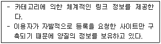
- 주제별 검색엔진
- 키워드 검색엔진
- 멀티스레드 검색엔진
- 하이브리드 검색엔진
(정답률: 40%)
47. 입력된 검색어에 대해 뉴스, 블로그, 카페, 사전, 이미지, 동영상 등 관련된 모든 자료를 분류해 검색해주는 검색 방식을 무엇이라 하는가?
- 일괄 검색
- 배분 검색
- 통합 검색
- 자연어 검색
(정답률: 50%)
48. 검색엔진이 갖추어야 할 조건으로 가장 거리가 먼 것은?
- 검색 속도가 빨라야 한다.
- 검색 옵션이 간단해야 한다.
- 데이터베이스의 내용이 많아야 한다.
- 사용자에게 편리한 인터페이스를 제공해야 한다.
(정답률: 46%)
49. 정보를 제공하는 웹 사이트들을 업종별로 분류해 놓은 주소 목록을 무엇이라 하는가?
- 레드 페이지
- 블루 페이지
- 화이트 페이지
- 옐로우 페이지
(정답률: 43%)
50. 로봇에 대한 설명으로 잘못된 것은?
- 자료를 수집하고 색인화 한다.
- 크롤러, 방랑자, 카탈로그 등이 있다.
- CGI 프로그램 소스를 파손할 수 있다.
- HTML 태그를 체크하고 인기 사이트를 방문한다.
(정답률: 30%)
51. 검색엔진의 3대 구성 요소에 해당하지 않는 것은?
- 로봇
- 색인기
- 서버 패키지
- 검색엔진 소프트웨어
(정답률: 38%)
52. 검색엔진에 키워드를 입력하고 검색한 결과 검색엔진의 데이터베이스에 관련 정보가 120개 있었고, 이 중 60개가 검색결과로 제공되었다. 60개 중에서 검색하고자하는 정확한 정보는 45개였다. 이때 정도율은 얼마인가?
- 30%
- 45%
- 60%
- 75%
(정답률: 53%)
53. 검색엔진에서 사용자 간의 질문과 답변을 데이터베이스로 구축하여 이를 대상으로 질문·답변 형태의 검색 정보를 제공하는 방식은?
- 디렉터리 검색
- 카테고리 검색
- 사이트 검색
- 지식 검색
(정답률: 54%)
54. 검색엔진에서 검색결과의 위치와 빈도를 높이기 위해 한 페이지 내에서 동일한 키워드를 여러 번 반복하여 입력하는 행위를 무엇이라 하는가?
- 스푸핑
- 스니핑
- 스패밍
- 스미싱
(정답률: 45%)
55. 정보 검색 결과의 평가 척도에 해당하지 않는 것은?
- 요약
- 위치
- 키워드
- 인덱스
(정답률: 36%)
56. 사용자가 원하는 뉴스 기사 및 웹 검색 결과를 이메일로 보내주는 구글 서비스는?
- 리더
- 토크
- 알리미
- 구글 뉴스
(정답률: 43%)
57. 네이트가 국내 포털사이트 중 처음 도입한 서비스로 문서에 포함된 의미 정보를 분석하여 사용자의 검색 의도에 가장 부합되는 내용을 검색해주는 지능형 검색 서비스는?
- 벡터 검색
- 문서 검색
- 시맨틱 검색
- 불리언 검색
(정답률: 38%)
58. 정보 검색의 발전 모델을 단계별로 바르게 나열한 것은?
- 키워드 검색 → 디렉터리 검색 → 하이브리드 검색 → 의미 검색 → 지식 검색
- 키워드 검색 → 디렉터리 검색 → 하이브리드 검색 → 지식 검색 → 의미 검색
- 키워드 검색 → 디렉터리 검색 → 의미 검색 → 지식 검색 → 하이브리드 검색
- 키워드 검색 → 디렉터리 검색 → 지식 검색 → 의미 검색 → 하이브리드 검색
(정답률: 33%)
59. 다음은 검색엔진의 정보 검색 관련 용어를 설명한 것이다. 이와 관련 있는 용어는?
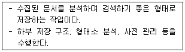
- 구문
- 검색
- 색인
- 메타
(정답률: 45%)
60. 일반적인 정보검색의 방법에 대한 설명으로 가장 타당하지 않은 것은?
- 리키즈를 최소화할 수 있도록 검색한다.
- 검색한 정보에 대한 출처와 사용 권한에 대해 주의한다.
- 관련된 전문 데이터베이스가 어디에 있는지 검색 전에 파악한다.
- 검색엔진이 인터넷 상에 있는 모든 정보를 찾아준다는 생각으로 정보검색에 임한다.
(정답률: 55%)
61. 정보 검색에서 사용하는 논리 연산자가 아닌 것은?
- OR
- AND
- NOR
- NOT
(정답률: 53%)
62. 정보검색 시 검색어로 사용되는 단어의 유의어, 동의어, 반의어 등을 계층적인 관계와 종속적인 관계로 나타내주는 용어 사전을 무엇이라 하는가?
- Garbage
- Leakage
- Stop word
- Thesaurus
(정답률: 45%)
63. 다음 중 정보원의 유형이 다른 하나는?
- 서지
- 초록지
- 백과사전
- 연구보고서
(정답률: 38%)
64. 본질적인 정보 또는 창작한 정보로 원 저작물을 의미하는 것은?
- 원시 정보
- 1차 정보
- 2차 정보
- 3차 정보
(정답률: 42%)
65. 인터넷 정보의 특성에 해당하는 것은?
- 유형성
- 시한성
- 매체 독립성
- 유한 가치성
(정답률: 28%)
66. 인터넷 정보원의 활용 방법에 대한 설명으로 잘못된 것은?
- 전문 DB의 검색 대상을 정확히 파악하고 검색에 임해야 한다.
- 검색엔진의 도움말은 수시로 접속하여 변경된 내용을 점검한다.
- 검색 결과를 보여주는 방법이나 기능을 비교, 분석할 수 있어야 한다.
- 찾고자 하는 정보의 형태와 관계없이 인기있는 하나의 검색엔진만 잘 사용하면 된다.
(정답률: 56%)
3과목: 인터넷 윤리
67. 다음 중 속도, 매체의 본질, 최소 투자에 대한 최대 효과 등 7가지 정보통신의 유혹 요인을 제시한 사람은?
- 스피넬로
- 데보라 존슨
- 리차드 루빈
- 버지니아 셰어
(정답률: 40%)
68. 스피넬로가 제시한 인터넷 규범 원리 중 다음에서 설명하는 것은?
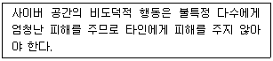
- 책임의 원리
- 정의의 원리
- 존중의 원리
- 해악금지의 원리
(정답률: 36%)
69. 다음 중 광고 메시지를 보낼 때, 수신자의 동의를 얻어야만 메시지를 전송할 수 있도록 하는 방식을 뜻하는 용어는?
- 옵트인
- 옵트아웃
- 인터넷 실명제
- 온라인 우표제
(정답률: 47%)
70. 다음 중 공개 게시판을 이용할 때의 네티켓으로 가장 거리가 먼 것은?
- 게시글은 짧고 명확하게 쓴다.
- 존대어로 작성하는 것이 기본이다.
- 게시물에 자신의 이름이나 아이디는 남기지 않는다.
- 주제를 앞에 두는 두괄식 문장으로 쓰는 것이 좋다.
(정답률: 45%)
71. 다음 괄호 안에 들어갈 가장 적절한 내용을 순서대로 나열한 것은?
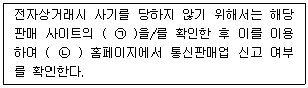
- ㉠-사업자 대표명, ㉡-국세청
- ㉠-사업자 대표명, ㉡-공정거래위원회
- ㉠-사업자등록번호, ㉡-국세청
- ㉠-사업자등록번호, ㉡-공정거래위원회
(정답률: 48%)
72. 다음 중 사이버 테러형 범죄에 대한 설명이 아닌 것은?
- 악성 프로그램 유포 등이 해당된다.
- 사이버 공간을 범죄의 수단으로 하는 범죄이다.
- 정보통신망 자체에 대해 공격을 하는 행위를 말한다.
- 정부나 민간인을 협박하기 위한 목적으로 하는 행위이다.
(정답률: 27%)
73. 다음 중 보이스 피싱 사기를 예방할 수 있는 방법이 아닌 것은?
- 발신자 전화번호를 확인한다.
- e-Trust 제도를 적극 활용한다.
- 휴대폰 문자 서비스를 적극 이용한다.
- 블로그 등에 개인 정보를 게시하지 않는다.
(정답률: 30%)
74. 인터넷 사기의 발생 요인으로 가장 거리가 먼 것은?
- 상대방이 물건을 실제로 가지고 있는지 확인하기 어렵다.
- 인터넷 거래는 대부분 선결제한다.
- 익명성을 보장하기 어렵다.
- 정보의 유출이 용이하다.
(정답률: 49%)
75. 1996년에 인터넷 중독 질환(Internet Addiction Disorder)이라는 용어를 처음으로 사용한 정신과 의사는?
- 스피넬로
- 리차드 루빈
- 이반 골드버그
- 버지니아 셰어
(정답률: 34%)
76. 다음 중 인터넷 중독의 원인으로 가장 거리가 먼 것은?
- 디지털 디톡스 열풍
- 사이버 공간의 특성
- 사회 환경적, 문화적 요인
- 인간의 사회적, 심리적인 욕구
(정답률: 39%)
77. 다음 중 K-척도의 문항 요소가 아닌 것은?
- 게임 선용 수준
- 일상생활장애
- 긍정적 기대
- 일탈행동
(정답률: 31%)
78. 한국정보화진흥원에서 개발한 K-척도는 무엇인가?
- 휴대폰 중독 진단 척도
- 게임행동 종합 진단 척도
- 문제적 게임이용 진단 척도
- 인터넷 중독 자가진단 척도
(정답률: 54%)
79. 다음 괄호 안에 들어갈 가장 적절한 내용을 순서대로 나열한 것은?
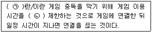
- ㉠-셧다운제, ㉡-법적으로
- ㉠-셧다운제, ㉡-게임 업체가 자율적으로
- ㉠-피로도 시스템, ㉡-법적으로
- ㉠-피로도 시스템, ㉡-게임 업체가 자율적으로
(정답률: 27%)
80. 다음 중 한국정보화진흥원 산하 기관인 인터넷 중독 대응 센터는?
- 아이윌센터
- 스마트쉼센터
- 정보통신산업진흥센터
- 청소년미디어중독예방센터
(정답률: 26%)